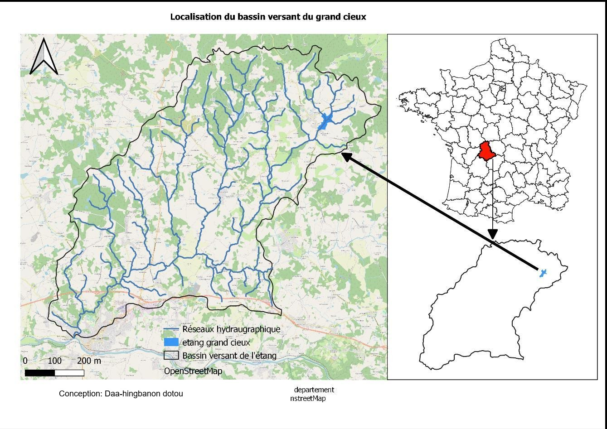
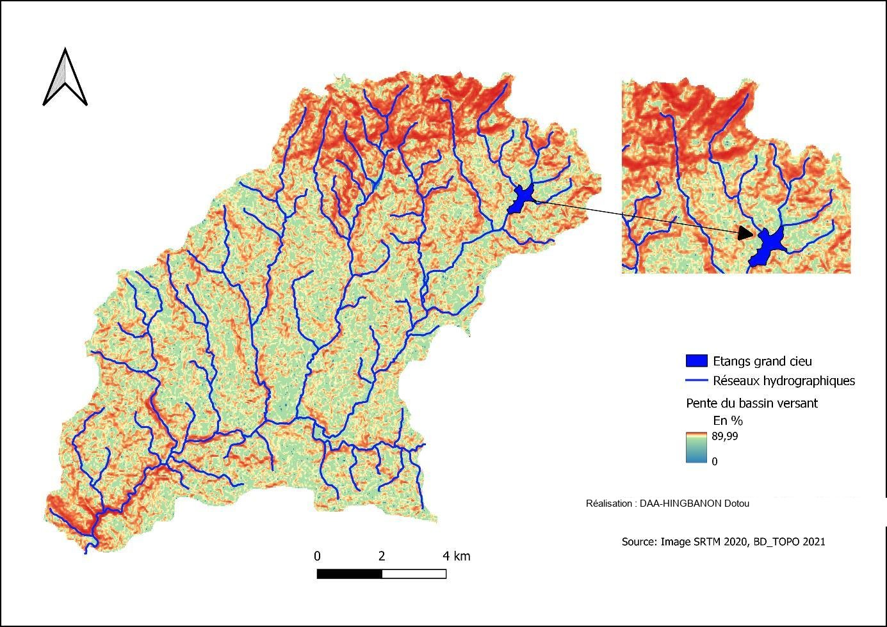
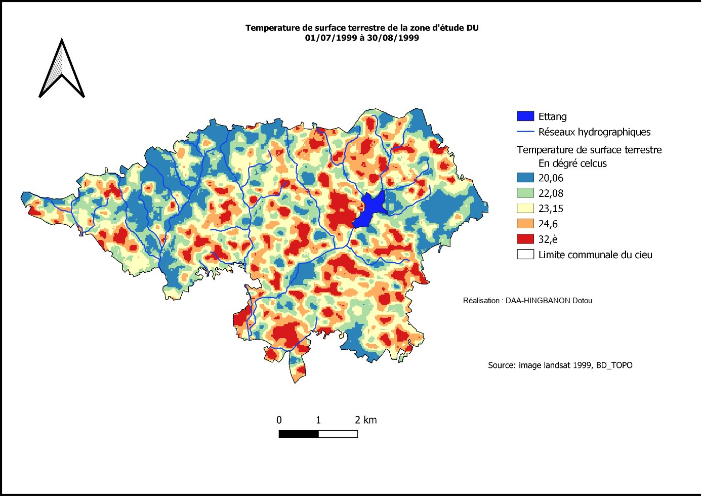

Géomatique, Limnologie, Environnement et Territoire · Université d'Orléans · 2022-2023 · Recherche en Limnologie physique
Fonctionnement thermique estival du Grand Étang de Cieux
Stratification et évolution de la thermocline, juillet-août 1999
Contexte et objectif
Le Grand Étang de Cieux (43 ha), situé en Haute-Vienne (Nouvelle-Aquitaine), est un plan d'eau ancien considéré comme un hotspot de biodiversité mais soumis à des pressions croissantes (sur-fréquentation, eutrophisation). Face à l'influence avérée du changement climatique sur le fonctionnement thermique des plans d'eau, l'objectif est de comprendre la dynamique de stratification de l'étang à partir de mesures de température prises entre juillet et août 1999, une étape jugée nécessaire avant toute comparaison avec la situation actuelle.

Démarche et outils
Le travail combine trois approches. Une approche géographique caractérise le cadre physique du bassin versant (hydrologie, climat, relief du département de Haute-Vienne). Une approche géomatique produit sous QGIS une carte du bassin versant, une carte des pentes et une carte de température de surface (LST) à partir d'un Modèle Numérique de Terrain (SRTM) et d'images satellite Landsat. Enfin, une approche limnologique sélectionne 4 journées représentatives (les plus chaudes et les plus fraîches de juillet et août, identifiées par calcul de variance des écarts de température) puis analyse les profils thermiques verticaux de l'étang à trois moments de la journée (00h, 8h, 17h).
Résultats
Entre juillet et août 1999, la température de surface du bassin versant varie de 20 à 32 °C, avec des îlots de chaleur dispersés. Les profils thermiques verticaux montrent majoritairement une stratification directe, de forme convexo-concave, avec une thermocline dont la profondeur varie selon les jours, repoussée au fond lors des journées les plus chaudes et plus proche de la surface en fin d'après-midi. Les journées les plus fraîches tendent vers l'homothermie, synonyme de brassage de la colonne d'eau et donc favorable à l'oxygénation du plan d'eau, dont l'état général apparaît satisfaisant sur la période étudiée.

